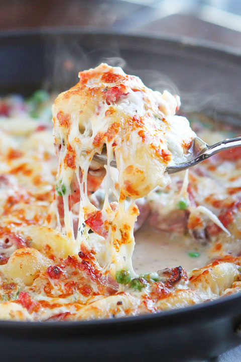

Ham and Cheese Gnocchi

Description
I found this recipe when looking for something to use up a bunch of
frozen ham that I got from my mom. What I like most about this recipe,
other than how simple it is, is the addition of peas to make a meal
that feels very homey and satisfying but also feels healthy.
You can really use any kind of cheese here (swiss, monterey jack,
gruyere) but what really amps up this recipe is using
pepper jack!
Seriously, give it a shot.
Ingredients
- 1 T butter
- 2 C diced onion
- 12oz. ham, diced
- 1/2 C chicken broth
- 3/4 C water
- 16oz. pack of potato gnocchi
- 1 C frozen peas
- 1/4 C heavy cream
- salt and pepper to taste
- 1 C shredded cheese
Instructions
- Melt the butter in a large ovenproof skillet over medium heat
- Add the onions and cook until softned and golden brown
- Add the ham and continue to cook until lightly browned
- Add the chicken broth and water, bring to simmer
- Add the gnochi, stir well, cover, and cook for 5 minutes
or until the gnocchi is tender
- Stir in the peas, cream, and plenty of salt and pepper to taste
- Sprinkle the cheese over the top and broil until golden and bubbly,
about 3 minutes